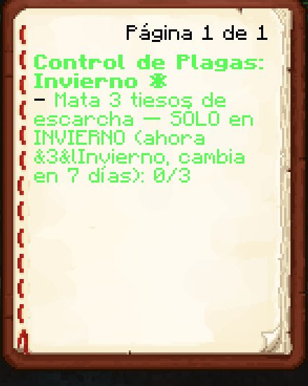

Boletín Oficial del Ayuntamiento del Reino · Se informa, no se alarma
EL HERALDO DEL REINO
Número 2414 de septiembre de 2026Tarde del lunes 14 de septiembre a la mañana del martes 15
DOS VECINOS ALEGAN QUE LES OBLIGARON A ROBAR, Y UNO DE ELLOS SEÑALA AL OTRO
Contestando a la resolución del lunes, kum4shiro presentó ayer en el tablón de denuncias su defensa: «fui amenazado y OBLIGADO a cometer crímenes». Aportó una sola prueba, este periódico, y esta Oficina ha comprobado que en eso tiene razón: lo publicamos dos veces. Lo que nunca publicamos es quién le obligó, porque él no lo dice —«si lo digo me joden»—. A las 22.25, Rockchango, sancionado en la misma resolución, alegó exactamente lo mismo y dio el nombre de quien le había obligado a él: kum4shiro. La Encargada del Orden mantiene las dos multas y lleva la cuenta en «150 y contando». Los dos piden juicio. No hay juzgado.
Redactado por la Oficina de Prensa del Ayuntamiento
PORTADA
«Lo pusieron en el periódico»: el sancionado aporta este Heraldo como prueba, y el Heraldo lo confirma
La conversación empezó a primera hora de la tarde y por dinero. GabbyQuill635,
Encargada del Orden, recordó a kum4shiro a las 14.46 que de la sanción anterior
solo había pagado una parte, y a las 17.33 lo concretó: «solo pagaste 10
diamantes, te tocaban 20, 10 del veneno y 10 de los hornos». El sancionado sostuvo que
había pagado lo que se acordó y que los hornos los había devuelto: «literalmente
en el cofre con la plata estaban los hornos». Y a las 19.20 subió
el tono jurídico: «mi abogado dejó claro que no había pruebas del veneno».
La Encargada respondió con aritmética. Si al revisar el caso resultaba que era él,
100 por costas de investigación. Por las lámparas que le robaron a ella y que,
según la Encargada, «lo confesaste el otro día», otros 50. Y a las
19.28, el total: «150 y contando». kum4shiro pidió pruebas. Ella contestó
«llegando a casa las saco».
Entonces, a las 19.29, llegó la defensa de fondo, que esta Oficina reproduce en
el orden y con los saltos de línea con que se escribió: «yo dije · que fui amenazado ·
y OBLIGADO · a cometer crímenes». Y a las 19.30, la prueba: «literalmente pusieron
en el periódico que me amenazaron, fue una de las primeras noticias donde yo salí». La
Encargada contestó que no lo recordaba y que «eso no te exenta de cometer
crímenes».
Esta Oficina ha revisado su archivo, porque la prueba es suya, y el sancionado tiene
razón. El número 13 publicó que a kum4shiro un tipo autoproclamado «dark» le había
robado y le había dejado carteles y fuego. Y el número 19 publicó su frase, literal:
«me amenazaron, Mazi, no tenía opción». Las dos cosas constan, y la primera, además,
desde antes de que se le denunciara. Lo que no consta en ningún número es quién le amenazó, y la Encargada le
preguntó exactamente eso. La respuesta, a las 19.31: «si lo digo me joden».
A partir de ahí el sancionado se atuvo a la doctrina. «Yo no tengo responsabilidad
legal ante algo que no fue mi actuar». «No la pagaré. Iremos a juicio y ahí se
anularán». Y un argumento que esta Oficina no sabe si es bueno pero sabe que es
nuevo: «es como decir yo no lo maté a un crimen que sucedió a cien años de mi
muerte». La Encargada cerró a las 19.34: «la multa se queda». Desde el público,
Ser℠ había propuesto a las 18.56 «¡PAGUE LO QUE DEBE!» y a las 19.36
«mejor linchémoslo»; ArsarFurro propuso aprovechar y ahorcar también a
Mariowo_, que no tenía nada que ver, y kum4shiro salió en defensa de Mariowo_ por la vía
sentimental. La Encargada pidió que eso se tratara en otro tablón.
Y a las 22.20, casi tres horas después, Rockchango, el otro sancionado del
lunes, entró en el tablón con la misma defensa: «ah, yo igual fui obligado». La
Encargada le dio la misma respuesta: «la multa es por lo que hiciste, sea o no tu
intención, seas o no obligado». Y a las 22.25 Rockchango aportó lo que kum4shiro
no había querido aportar, un nombre: «Yo fui obligado por kum4shiro. A robar. Él me
dijo: o robas o te rompo la casa. Tenía miedo.» A las 22.26, la Encargada propuso
un cargo nuevo por extorsión contra kum4shiro y dejó claro que la multa de
Rockchango no desaparece. Rockchango contestó «jajaja».
O sea que el Reino tiene esta mañana dos vecinos que alegan haber sido obligados a
robar, uno que señala al otro y uno que dice haber sido obligado por alguien
a quien no puede nombrar. Esta Oficina no acusa a nadie: pone lo que escribió cada uno
en el orden en que lo escribió. De todas las partes, la única que no ha dicho nada en toda la
jornada es el abogado, que tiene sus motivos y están más abajo, en papel de luto.
ANOMALÍAS
La primavera entró de madrugada, y el almanaque ha corrido sesenta y cinco días en dos números
El número 22 de este Heraldo publicó, el domingo, que el Reino estaba a 16 de enero
del año 9, en invierno, con 47 días por delante hasta la primavera. A las
18.58 del lunes, el cuaderno de encargos de Cliqueame decía que al invierno
le quedaban 7. A las 20.47, el propio Cliqueame preguntó en la plaza si se había
acabado la estación; Gaaraham03 aportó la observación de campo —«según, pero veo
nieve todavía»— y Cliqueame zanjó con el cuaderno en la mano: «5 días le quedan,
dice».
A las 04.24 del martes, el mismo cuaderno ya decía «Primavera, cambia en 85
días», con 11 grados a la vista y nieve en el suelo. Y al cierre de esta
edición, el almanaque municipal marca 22 de marzo del año 9, con 74 días
para el verano. De la madrugada a mediodía, el verano se ha acercado once días en nueve
horas.
Puestos en fila, los partes dan sesenta y cinco días de almanaque entre el número 22
y éste, que es un invierno entero despachado en dos números. Esta corporación sostiene, como
viene sosteniendo desde el número 15, que el calendario avanza a la velocidad a la que
le corresponde avanzar, y que si la nieve no se ha enterado, es cosa de la
nieve.
EL PARTE DEL PULSO
El Control de Plagas buscaba el invierno por un nombre que no era el del invierno

El cuaderno de Cliqueame a las 18.58, pidiendo tres tiesos de escarcha «SOLO en INVIERNO» y explicando, entre paréntesis, que ahora es &3&lInvierno. Esas marcas son del cajista de la imprenta municipal, y por culpa de ellas el negociado no reconocía el invierno estando dentro de él.Archivo Municipal · pase el ratón para revelarla
Lo denunció Cliqueame a las 18.58: el encargo le pedía tres tiesos de
escarcha en invierno, había abatido esqueletos tiesos, arqueros de hielo, zombis y
bandidos, y el contador no se había movido. A las 19.02 el Ministerio aportó su
informe técnico, completo: «ni yo sé qué son». A las 19.16, ArsarFurro dijo
tener una teoría y necesitar 32 diamantes para llevarla a la práctica. Y a las
20.48 Demaxxp confirmó que le pasaba con los encargos de todas las
estaciones.
Tenían razón los tres, y el Ministerio también, a su manera. La imprenta municipal
escribía el nombre de la estación con las marcas del cajista a la vista, y el
Negociado de Plagas comparaba la estación de verdad con ese nombre impreso, que no se
parece a nada. Resultado: ningún bicho contaba en ninguna estación, ni siquiera en
la suya. Once vecinos tenían alguno de los cuatro encargos a medias, todos a cero.
Corregido desde el cierre técnico de las 08.48, y ahora el encargo dice además con
todas las letras que el esqueleto tieso no es un tieso de escarcha, que era la
segunda mitad del malentendido.
Del resto, por orden. La compuerta del último turno de la Cantera decía
«primero tienes que completar la fase anterior» y no decía cuál ni qué hacer;
Gaaraham03 la leyó nueve veces seguidas antes de fotografiarla. Ahora dice qué hacer. El
Ministerio había anunciado a las 09.06 una solución más expeditiva —arrasar la
instalación y convertir el encargo en «pasear por un erial radioactivo»— y esta
Oficina celebra que no hiciera falta · Y una nueva dotación: la Dra.
Pizarrica, que el domingo recomendó no preguntar qué había debajo del Reino, abre
tres encargos para que se le traiga lo que hay encima: Relájate y
Muéstrame desde las 16.22 del lunes, y El Cincel y la Paciencia y Lo Que
Brilla y No Sirve desde las 08.50 del martes. Consta que la doctora odia cada piedra,
y consta que las pide igual. Ninguna incidencia reviste gravedad y todas estaban
previstas.
ADMINISTRACIÓN
El número del lunes no salió, el Ministerio culpó al Emperador, y esta Oficina desmiente al Ministerio
A las 06.42 del martes, GabbyQuill635 dejó constancia en el tablón de lo
que esta casa no había sabido comunicar: «hoy no hubo heraldo», con una cara
triste. A las 08.15, el Ministerio de Construcciones emitió su diagnóstico, en dos
palabras: «Maldito duke».
Esta Oficina desmiente al Ministerio. El número 23 no salió el lunes por un
defecto de la imprenta municipal, y ha salido esta mañana junto a éste. Su
Majestad no tuvo nada que ver, como no tiene nada que ver con nada, que es precisamente
lo que le distingue. Se hace notar, sin extraer conclusión, que el Emperador fijó el
domingo en mil cacahuates la cuantía mínima de lo que roba el Ministro, y que el
Ministro le ha culpado de algo el martes. Van seguidos en el archivo.
Y a las 06.46, Cliqueame preguntó a la ventanilla de atención cuándo se
hacen los cierres técnicos, con una condición: «no olvides llamarme por mi título».
La ventanilla le contestó llamándole «Dios del Nuevo Mundo, Patrón de los
Cultivos», y ahí se paró. Esta Oficina recuerda que el título completo, tal y como
consta en el expediente desde el número 19, sigue: y Primer Hombre que se Fumó su Propia
Mercancía Delante del Cofre. Para retirarle esa segunda mitad tendrá que hacer algo muy
gordo, y preguntar un horario no lo es.
Negociado de Orden y Convivencia · el expediente de los hornos
LA COMISARÍA DEL REINO
Dos sancionados que alegan coacción, uno que señala al otro, una cuenta en «150 y contando» y ningún juzgado donde discutirla
Sale este pliego dos días seguidos porque el expediente se movió dos días seguidos. El lunes hubo resolución; el martes, la defensa de los dos sancionados, que coincide, y una acusación cruzada que no estaba en la resolución y que la Encargada del Orden recibió como lo que es: un cargo más.
Expediente de los hornos · multas de kum4shiro y de Rockchango
LOS OBLIGADOS
kum4shiro reconoce haber pagado 10 diamantes de los 20 que le reclama la Encargada y alega que le obligaron a cometer los robos, sin decir quién. Rockchango alega lo mismo y dice que quien le obligó fue kum4shiro, con una amenaza concreta: «o robas o te rompo la casa». La Encargada mantiene las dos multas, anuncia 100 de costas si la revisión le da la razón y 50 por unas lámparas, y propone un cargo por extorsión. Los dos sancionados piden juicio. Plazo para kum4shiro: el final de la semana, «o subirá».
Multas firmes
El cuerpo, y quién responde por cada uno
GabbyQuill635Encargada del OrdenAvalado por El vecindario, por unanimidad, el 6 de septiembre. Sostuvo el tablón sola de las 14.46 a las 22.26, con una doctrina que no ha cambiado ni una coma: la multa es por lo que se hizo, se quisiera o no. Y dejó dicho a las 19.26 algo que esta Oficina anota por su valor procesal: «yo paso capturas; otros policías no lo hacían en otros reinos».
Gaaraham03Abogado · nombrado por kum4shiro a las 19.27Avalado por Nadie; ejerce porque es el único. Defiende ya a Rockchango desde el 11 de septiembre y a la Encargada en su recurso desde el 13. No compareció en toda la jornada. Consta que murió tres veces.
Cómo fue, por horas
14.46La Encargada: de la sanción anterior solo se pagó la mitad.
19.20kum4shiro: «mi abogado dejó claro que no había pruebas del veneno».
19.27kum4shiro nombra abogado para todo lo que venga.
19.28La Encargada suma lámparas y costas: «150 y contando».
19.29kum4shiro alega que fue «amenazado y OBLIGADO».
19.30Aporta como prueba este periódico.
19.31Sobre quién le obligó: «si lo digo me joden».
19.34«La multa se queda». kum4shiro: «iremos a juicio».
22.20Rockchango: «yo igual fui obligado».
22.25Rockchango señala a kum4shiro como quien le obligó.
22.26La Encargada propone cargo por extorsión. La multa de Rockchango se queda.
Esta Comisaría no acusa a ningún vecino y no decide si obligar a alguien a robar le exime de haber robado, porque eso lo decide un juzgado y en este Reino no lo hay. Publica lo que escribió cada parte, en el orden en que lo escribió. Y hace constar, porque es un hecho de archivo y no un razonamiento, que el único documento aportado por la defensa en toda la jornada es este periódico, y que dice lo que la defensa dice que dice.
La Comisaría del Reino · con el visto de la Oficina de Prensa
Necrológicas · Registro Civil del Reino
LA ESQUELA
El Ayuntamiento del Reino participa las defunciones de la jornada que a su juicio merecen constar, y ruega una oración por quienes ya han vuelto.
LA ESQUELA
Gaaraham03
Que entregó la vida tres veces en la jornada en que no la entregó nadie más: a
las 00.48, a manos de un arquero escamaverde; a la 01.17, a manos de
una rata de alcantarilla; y a las 06.37, a manos de un barrenista
infectado, que para la ocasión usó su maza. Pasó la última parte de la noche ante la
compuerta del último turno de la Cantera, que le repitió nueve veces la misma frase
sin decirle qué hacer.
Era, a esas horas, el único abogado del Reino, y a las 19.27 le había caído un
cliente nuevo sin aviso: kum4shiro, que dejó escrito que «de ahora en adelante
todo se resolverá con mi abogado». Con él ya son tres. El segundo es
Rockchango, que a las 22.25 acusó al tercero de haberle obligado a robar. Y la
primera es la Encargada del Orden, que multa a los dos.
No contestó en el tablón en toda la jornada, por las razones que constan
arriba. Ruegan sus clientes una oración y, si puede ser, una cita. Goza de buena salud.
Oficina de Prensa · Negociado de Registro Civil y Defunciones
El parte de la jornada
Duración de la jornada
18 h 20 min, de las 14:51 a las 09:11
Cuentas en el Reino
4 — 4 vecinos y ninguno de esta administración
Altas tramitadas
0
Máxima concurrencia
2 a la vez, a las 20:29
Defunciones
3
Vecinos fallecidos
1, Gaaraham03, las tres
Encargos cerrados
2
Escritos en el tablón de denuncias
127
Vecinos que alegan que les obligaron a robar
2
Vecinos señalados como quien obliga
1
Vecinos señalados como quien obliga al que obliga
0
Documentos aportados por la defensa
1, este periódico
Números de este periódico que le dan la razón
2
Cuenta de la Encargada a las 19.28
150 y contando
Propuestas de linchamiento
1
Propuestas de ahorcar a quien no tenía nada que ver
1
Clientes del único abogado
3
Clientes que se acusan entre sí
2
Clienta que multa a los otros dos
1
Comparecencias del abogado
0
Juzgados
0
Días que lleva convocado el juzgado
21
Días de almanaque entre el número 22 y éste
65
Estaciones cambiadas de madrugada
1
Encargos de estación que contaban algún bicho
0, corregido
Informe técnico del Ministerio sobre los tiesos de escarcha
«ni yo sé qué son»
Veces que la compuerta del último turno dijo lo mismo
9
Instalaciones arrasadas
0, pese al anuncio
Encargos nuevos de la Dra. Pizarrica
3
Números que no salieron el lunes
1
Autoridades a las que el Ministerio culpó del retraso
1, sin fundamento
Títulos recortados por la ventanilla
1, a la mitad
Aviso oficial
Sobre la defensa de «me obligaron», este Ayuntamiento informa de lo siguiente.
Primero, que no existe ordenanza que diga si quien roba bajo amenaza responde de lo
robado, y que esta corporación no la va a redactar hoy. Segundo, que eso lo tendría que
decidir el juzgado, que se convocó hace veintiún días y que se celebrará cuando se pronuncie el
gobierno en funciones, que sigue en funciones. Y tercero, que mientras tanto las multas
de la Encargada del Orden siguen en vigor, porque nadie con competencia ha dicho lo
contrario, y nadie con competencia existe.
Cuarto, sobre el número que no salió. La responsabilidad es de esta Oficina, y de
nadie más. El Ministerio de Construcciones queda invitado a retirar su diagnóstico de las
08.15, y esta casa le recuerda que no se le acusaba de nada, cosa que el domingo no
estaba tan clara.
Quinto, sobre el almanaque. Este Ayuntamiento no gobierna el paso del tiempo, y
lamenta que el tiempo tampoco se deje gobernar. Se ruega al vecindario que no se quite el
abrigo porque lo diga el calendario: en el suelo sigue habiendo nieve, y la nieve no lee
este periódico.
Y sexto. A Gaaraham03, tres veces fallecido, esta corporación le desea pronta recuperación, que en este Reino es
inmediata, y le recuerda que tiene tres causas abiertas y ningún sitio donde
defenderlas.